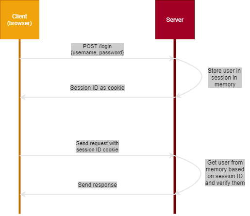

JWT Authorisation
Legacy Authorisation (what does JWT replace?)
Historically, the most common form of authorisation would be the client first sending a login request to the server (consisting of a username and password). The server would then check that the credentials were valid and, if so, would then create a new session ID linked to the user, store it in memory and then return it to the client.
The client would store this session ID as a cookie and suplies it on any subsequent calls to the server. The server would check which user this session ID is mapped to and check to see if that user is authorised to perform the requested method. If they are authorised, the server process and returns the response as expected.

JWT Authorisation
JWT authorisation works differently, in that when the user logs in, instead of the server storing the session information in memory, it will instead create a JSON Web Token and encodes and signs it with its a key. This last step ensures that the server will know if the token has been tampered with. Once the token has been created, it’s then returned to the client.
The client can store the token however it wants, and provides it in all subsequent calls to the server. The server will first verify the signature on the token to make sure that it hasn’t been tampered with. Then the user can be extracted from the token and the server can process the request and return the response. One big advantage with this flow is that the user information is all stored within the JWT, so this can tell the server what actions the user is authorised to perform. This means that the server has to do less work as it doesn’t need to look up any information about the user at all.
JWT Structure
A JSON web token consists of three parts:
- Header
- Payload
- Signature
These parts are seperated with a dot, so a typical JWT looks like this:
xxxxx.yyyyy.zzzzz
Header
The header typically contains two parts: the type of the token and the algorithm that has been used to create the signature
{
"alg": "RS256",
"typ": "JWT"
}
This JSON is Base64 encoded and that is used to form the first part of the JWT
Payload
The second part of a token is the payload and it contains the claims. Claims are statements about an entity (user) such as the username/customer reference, whether the user is an admin, expiration time or actions that the entity is allowed to perform.
{
"sub": "1234567890",
"name": "John Doe",
"admin": true
}
There are three types of claims
- Registered claims: predefined claims that are recommended to be included (but not mandatory) such as iss (issuer), exp (expiration time) and sub (subject)
- Public claims: claims that can be custom defined and that are either registered in the IANA JSON Web Token Registry or given collision-resistant names
- Private claims: claims that can be custom defined but that do not need to be collision resistant
Registered claims have keys that are only three characters long to to keep the tokens compact.
The subject claim is very common and will be seen in most JWTs. It is a way to identify the entity that is performing the request, very similar to the session ID we saw in the previous section.
Once this json has been structured, it is then encoded and used to form the second part of the token. Note that all claims can be decoded by anyone with access to the JWT, so in general, no secret data should be put here unless it is encrypted.
Signature
The final part of the token is the signature which is constructed by taking the first two encoded sections and using the algorithm specified in the header along with a secret:
HMACSHA256(base64UrlEncode(header) + "." + base64UrlEncode(payload), secret);
Signature Validation
When a client supplies the JWT in a subsequent request, the first thing the server will do is verify it. It does this by taking the header and payload and creating a signature as described above. Then it checks its generated signature against the signature in the token. If they don’t match, it means that the token has been tampered with in some way, and it rejects the request.
Why use JWT
In traditional applications, any server you make requests to would have to be able to access the stored sessions in order to authorise the user. With JWT, the secret can be shared between as many servers as are needed and authorised by each. It also means nothing has to be stored in memory, so those resources can be used elsewhere.
JWT is also more compact than other types of tokens (SWT and SAML), so it’s more efficient to pass around in HTTP calls.